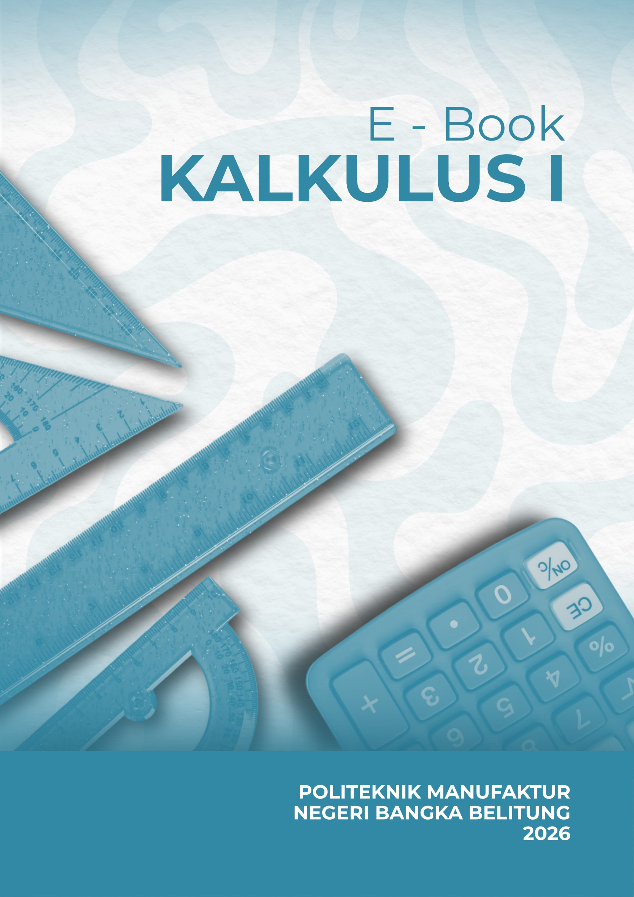

Kalkulus 1
Modul Pembelajaran Digital untuk Mahasiswa Semester 2

Kata Pengantar
Puji syukur ke hadirat Tuhan Yang Maha Esa atas terselesaikannya Modul Pembelajaran Digital Kalkulus 1 ini. Modul ini disusun sebagai panduan belajar mahasiswa semester kedua yang mengambil mata kuliah Kalkulus 1, sebuah fondasi penting bagi seluruh disiplin ilmu eksakta, teknik, dan sains.
Kalkulus adalah bahasa alam semesta — dari cara roket menembus atmosfer, cara epidemi menyebar, hingga cara algoritma kecerdasan buatan belajar dari data, semuanya berbicara dalam bahasa kalkulus. Modul ini hadir untuk menjembatani konsep-konsep abstrak tersebut menjadi pemahaman yang intuitif dan aplikatif.
"Matematika adalah ratu dari segala ilmu, dan Aritmetika adalah ratu dari Matematika."
Modul ini disusun secara kolaboratif oleh 6 kelompok mahasiswa yang masing-masing bertanggung jawab atas satu bab. Setiap bab dilengkapi dengan penjelasan teori, contoh soal, video pembelajaran, latihan soal, dan kalkulator interaktif untuk membantu mahasiswa memahami konsep secara mendalam.
Struktur Modul
| Bab | Topik | Kelompok | Halaman |
|---|---|---|---|
| Bab 1 | Bilangan Real & Fungsi | Kelompok 1 | Buka Bab 1 |
| Bab 2 | Limit Fungsi | Kelompok 2 | Buka Bab 2 |
| Bab 3 | Kekontinuan Fungsi | Kelompok 3 | Buka Bab 3 |
| Bab 4 | Turunan (Diferensial) | Kelompok 4 | Buka Bab 4 |
| Bab 5 | Aplikasi Turunan | Kelompok 5 | Buka Bab 5 |
| Bab 6 | Integral | Kelompok 6 | Buka Bab 6 |
| Bab 7 | Aplikasi Integral | Kelompok 7 | Buka Bab 7 |
| Bab 8 | Deret Tak Hingga | Kelompok 8 | Buka Bab 8 |
| Bab 9 | Integral Tak Hingga | Kelompok 9 | Buka Bab 9 |